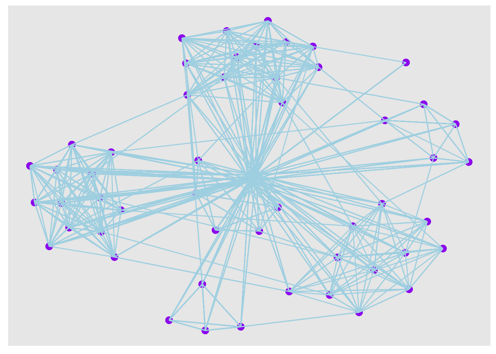
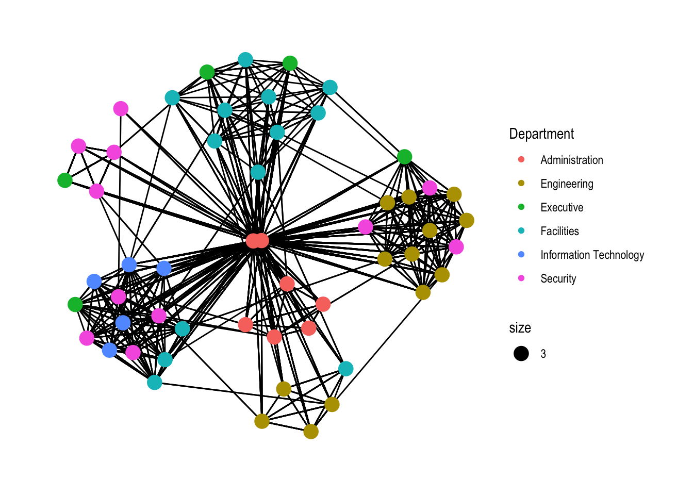
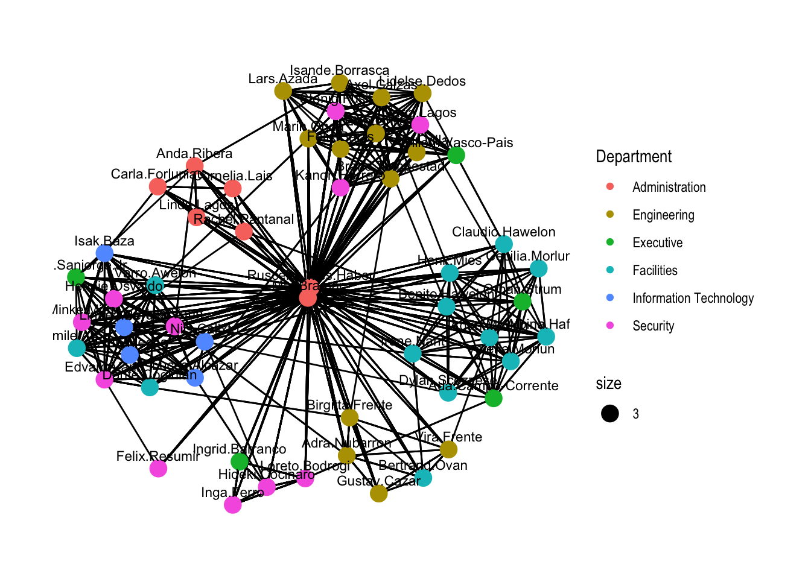
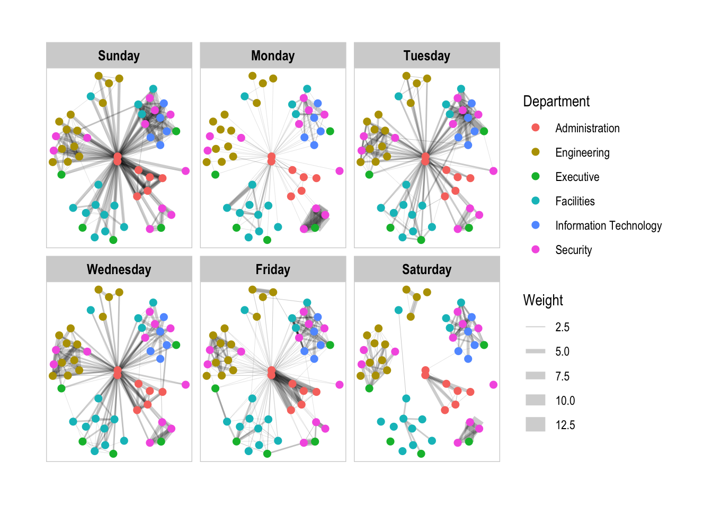
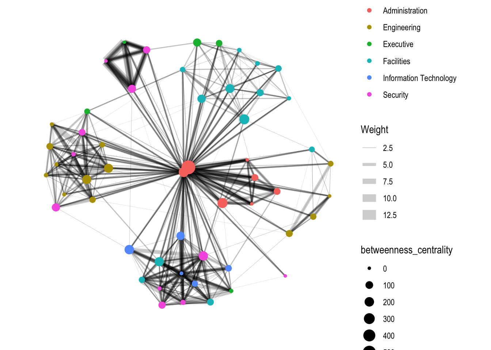
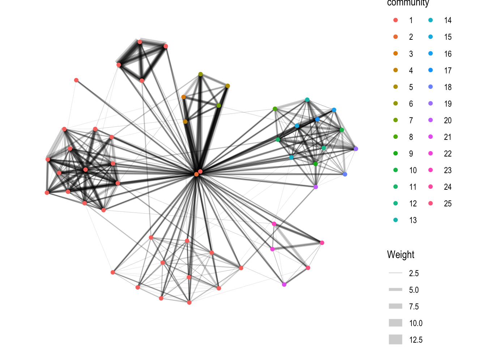

pacman::p_load(tidyverse, lubridate, ggrepel, ggraph, igraph, tidygraph, visNetwork, clock, graphlayouts)Network Analysis
1. Learning Objectives
Network visualization, also known as graph visualization, is a method of visually representing relationships and connections between entities in a network or graph data structure. The importance of network visualization lies in its ability to uncover hidden patterns, structures, and insights within complex networks, facilitating analysis and decision-making.
Key Takeaways:
- Create graph object data frames
- Manipulate graph object data frames using appropriate functions of
dplyr,lubridate, andtidygraph - Build network graph visualisation using appropriate functions of
ggraph - Compute network geometrics using
tidygraph - Build advanced graph visualisation by incorporating the network geometrics
- Build interactive network visualisation using
visNetworkpackage.
Graphs consist of nodes and edges connecting them. They can represent various types of relationships, such as social networks, transportation networks, and biological networks. Network visualization techniques help users explore, analyze, and interpret the structure and dynamics of complex networks.
- Network Data Sets: Datasets containing information about nodes, edges, and their attributes.
- Graph Data Format: Different formats for representing graph data, such as edge lists, adjacency matrices, and graph databases.
- Designer toolkit, such as Gephi, provide user-friendly interfaces for designing and visualizing network graphs.
- Programmer Toolkit: R packages offer programmable solutions for graph visualization and analysis.
- Graph Layouts: Various layout algorithms for arranging nodes and edges in a visually appealing manner.
- Key Node Attributes: Characteristics of nodes, such as size, color, and shape, used to represent different node properties.
- Key Edge Attributes: Features of edges, such as thickness, color, and directionality, conveying relationship information.
- Bundles, Shapes, Images, and More: Additional visual elements used to enhance the representation of complex networks.
- Relationships: Identifying and analyzing connections between nodes to understand relationships within the network.
- Hierarchies: Revealing hierarchical structures or levels of organization within the network.
- Communities: Detecting clusters or communities of nodes with dense internal connections.
- Flows: Visualizing the flow of information, resources, or influence through the network.
- Spatial Networks: Analyzing networks embedded in geographic space to understand spatial relationships and patterns.
2. Load Packages
tidyverse: Comprehensive set of packages for data manipulation and visualization in R.lubridate: Facilitates working with dates and times in R, providing easy-to-use functions.ggraph: Offers grammar of graphics-based plotting for network graphs in R.igraph: Provides tools for network analysis, including functions for creating, manipulating, and analyzing graphs.tidygraph: Extends tidyverse principles to graph data, making it easier to work with graph objects in a tidy way.visNetwork: Enables the creation of interactive network visualizations using the vis.js library.clock: Offers functions for creating and manipulating circular layouts and clocks in R.graphlayouts: Provides various layout algorithms for visualizing graphs, enhancing graph visualization capabilities in R.
3. Import Data
GAStech is a email communication dataset from oil exploration and extraction company.
The first dataset GAStech_nodes (GAStech-email_edges.csv) contains the nodes data; comprises of the names, department and title of the 54 employees.
GAStech_nodes <- read_csv("data/GAStech_email_node.csv")
glimpse(GAStech_nodes)Rows: 54
Columns: 4
$ id <dbl> 1, 2, 3, 4, 5, 6, 7, 44, 45, 46, 8, 9, 10, 11, 12, 13, 14, …
$ label <chr> "Mat.Bramar", "Anda.Ribera", "Rachel.Pantanal", "Linda.Lago…
$ Department <chr> "Administration", "Administration", "Administration", "Admi…
$ Title <chr> "Assistant to CEO", "Assistant to CFO", "Assistant to CIO",…The second dataset GAStech_edges (GAStech_email_nodes.csv) contains the edges/link data; comprises of 9063 emails correspondances between 55 employees in two weeks.
GAStech_edges <- read_csv("data/GAStech_email_edge-v2.csv")
glimpse(GAStech_edges)Rows: 9,063
Columns: 8
$ source <dbl> 43, 43, 44, 44, 44, 44, 44, 44, 44, 44, 44, 44, 26, 26, 26…
$ target <dbl> 41, 40, 51, 52, 53, 45, 44, 46, 48, 49, 47, 54, 27, 28, 29…
$ SentDate <chr> "6/1/2014", "6/1/2014", "6/1/2014", "6/1/2014", "6/1/2014"…
$ SentTime <time> 08:39:00, 08:39:00, 08:58:00, 08:58:00, 08:58:00, 08:58:0…
$ Subject <chr> "GT-SeismicProcessorPro Bug Report", "GT-SeismicProcessorP…
$ MainSubject <chr> "Work related", "Work related", "Work related", "Work rela…
$ sourceLabel <chr> "Sven.Flecha", "Sven.Flecha", "Kanon.Herrero", "Kanon.Herr…
$ targetLabel <chr> "Isak.Baza", "Lucas.Alcazar", "Felix.Resumir", "Hideki.Coc…The output report of GAStech_edges reveals that the data type of SentDate is a character instead of date and requires conversion.
4. Prepare Data
First, we convert the column SentDate to Date format using the dmy() function from the lubridate package, assuming the dates are in the format day-month-year.
Next, we create a new column named Weekday, which contains the weekday names corresponding to the dates in the SentDate column, using the wday() function from the lubridate package. The label = TRUE argument specifies that the function should return the weekday names, and abbr = FALSE specifies that the full weekday names should be used.
GAStech_edges <- GAStech_edges %>%
mutate(SendDate = dmy(SentDate)) %>%
mutate(Weekday = wday(SentDate, label = TRUE, abbr = FALSE))
glimpse(GAStech_edges)Rows: 9,063
Columns: 10
$ source <dbl> 43, 43, 44, 44, 44, 44, 44, 44, 44, 44, 44, 44, 26, 26, 26…
$ target <dbl> 41, 40, 51, 52, 53, 45, 44, 46, 48, 49, 47, 54, 27, 28, 29…
$ SentDate <chr> "6/1/2014", "6/1/2014", "6/1/2014", "6/1/2014", "6/1/2014"…
$ SentTime <time> 08:39:00, 08:39:00, 08:58:00, 08:58:00, 08:58:00, 08:58:0…
$ Subject <chr> "GT-SeismicProcessorPro Bug Report", "GT-SeismicProcessorP…
$ MainSubject <chr> "Work related", "Work related", "Work related", "Work rela…
$ sourceLabel <chr> "Sven.Flecha", "Sven.Flecha", "Kanon.Herrero", "Kanon.Herr…
$ targetLabel <chr> "Isak.Baza", "Lucas.Alcazar", "Felix.Resumir", "Hideki.Coc…
$ SendDate <date> 2014-01-06, 2014-01-06, 2014-01-06, 2014-01-06, 2014-01-0…
$ Weekday <ord> Friday, Friday, Friday, Friday, Friday, Friday, Friday, Fr…We aggregate the individual by date, senders, receivers, main subject and day of the week.
The first filter() keep only rows where the column MainSubject equals Work related. group_by() groups the data by the source, target, and Weekday columns and calculates the count of observations within each group using the summarise() function, storing the result in a new column named Weight.
The second filter() removes rows where the source is equal to the target, ensuring that self-loops are excluded.
The third filter() removes rows where the Weight (count of observations) is less than or equal to 1.
Finally, we ungroup() the data, ensuring that subsequent operations are performed on the entire dataset rather than on grouped subsets.
GAStech_edges_aggregated <- GAStech_edges %>%
filter(MainSubject == "Work related") %>%
group_by(source, target, Weekday) %>%
summarise(Weight = n()) %>%
filter(source != target) %>%
filter(Weight > 1) %>%
ungroup()
glimpse(GAStech_edges_aggregated)Rows: 1,372
Columns: 4
$ source <dbl> 1, 1, 1, 1, 1, 1, 1, 1, 1, 1, 1, 1, 1, 1, 1, 1, 1, 1, 1, 1, 1,…
$ target <dbl> 2, 2, 2, 2, 2, 3, 3, 3, 3, 3, 4, 4, 4, 4, 4, 5, 5, 5, 5, 5, 6,…
$ Weekday <ord> Sunday, Monday, Tuesday, Wednesday, Friday, Sunday, Monday, Tu…
$ Weight <int> 5, 2, 3, 4, 6, 5, 2, 3, 4, 6, 5, 2, 3, 4, 6, 5, 2, 3, 4, 6, 5,…5. Create Network Objects
tidygraph is an R package designed for the manipulation and analysis of network graph data. It leverages the principles of the tidyverse, providing a grammar for graph manipulation similar to tidy data principles.
Here are the steps to create network objects:
Data Input: Tidygraph take input data in the form of tidy data frames, where each row represents an edge in the network, and columns represent attributes of the edges or associated nodes.
Conversion from Tabular Data to Graph Structure: Tidygraph creates two internal data frames; one for nodes and one for edges. Nodes typically contain unique identifiers and any associated node attributes. Edges contain the identifiers of the source and target nodes (stored as node IDs), along with any edge attributes.
tbl_graph()creates a tbl_graph network object from nodes and edges data.as_tbl_graph()converts network data and objects to a tbl_graph network.Below are network data and objects supported by
as_tbl_graph():- node data.frame and an edge data.frame
- data.frame, list, matrix from base
- igraph from igraph
- network from network
- dendrogram and hclust from stats
- Node from data.tree
- phylo and evonet from ape
- graphNEL, graphAM, graphBAM from graph
Graph Representation: Tidygraph represents the network using a combination of these data frames and associated metadata, allowing for efficient storage and manipulation of the graph structure.
Tidy API: Once the network object is created, tidygraph provides a tidy API for manipulating and analyzing the graph. This API allows users to perform common graph operations using familiar dplyr-style verbs, enabling a consistent and intuitive workflow.
Step 1: Create a tidygraph network graph data frame
The tbl_graph() function in the tidygraph package is used to create a tidygraph network graph data frame.
The nodes argument specifies the data frame containing information about the nodes of the graph. It expects a data frame in a tidy format, where each row corresponds to a single node and each column represents a node attribute.
The edges argument specifies the data frame containing information about the edges between nodes in the graph. It expects a data frame in a tidy format, where each row corresponds to a single edge and each column represents an edge attribute.
The directed argument specifies whether the graph is directed or undirected. If directed = TRUE, it indicates that the edges have a directionality, meaning they have a source node and a target node. If directed = FALSE, it indicates that the edges do not have a directionality, meaning they are bidirectional and can be traversed in both directions.
GAStech_graph <- tbl_graph(nodes = GAStech_nodes,
edges = GAStech_edges_aggregated,
directed = TRUE)The output above reveals that GAStech_graph is a tbl_graph object with 54 nodes and 1372 edges.
Step 2.1: Graph Representation
The ggraph() function allows the visualization of the graph using ggplot2 syntax to understand its structure and connections. ggraph() creates the graph visualization, geom_node_point() adds points for nodes and geom_edge_link() adds links between nodes based on the edges.
ggraph(GAStech_graph) +
geom_node_point() +
geom_edge_link()Step 2.2: Table Representation
The as_tbl_graph() function converts the graph object to at tbl_graph format, which allows you to manipulate and analyze the graph using tidyverse functions.
as_tbl_graph(GAStech_graph)# A tbl_graph: 54 nodes and 1372 edges
#
# A directed multigraph with 1 component
#
# Node Data: 54 × 4 (active)
id label Department Title
<dbl> <chr> <chr> <chr>
1 1 Mat.Bramar Administration Assistant to CEO
2 2 Anda.Ribera Administration Assistant to CFO
3 3 Rachel.Pantanal Administration Assistant to CIO
4 4 Linda.Lagos Administration Assistant to COO
5 5 Ruscella.Mies.Haber Administration Assistant to Engineering Group Mana…
6 6 Carla.Forluniau Administration Assistant to IT Group Manager
7 7 Cornelia.Lais Administration Assistant to Security Group Manager
8 44 Kanon.Herrero Security Badging Office
9 45 Varja.Lagos Security Badging Office
10 46 Stenig.Fusil Security Building Control
# ℹ 44 more rows
#
# Edge Data: 1,372 × 4
from to Weekday Weight
<int> <int> <ord> <int>
1 1 2 Sunday 5
2 1 2 Monday 2
3 1 2 Tuesday 3
# ℹ 1,369 more rows5.1 Active Objects
In the tidygraph package, activate() is used to specify which type of element in the graph object you want to work with. In this case, activate(edges) is specifying the edges of the graph. Once activated, operations or transformations can be performed specifically on the edges.
After activating the edges, the arrange(desc(Weight)) function is used to arrange the edges in descending order based on their weight. This is useful for tasks such as identifying the most significant or important edges in the network based on some weight metric.
GAStech_graph_2 <- GAStech_graph %>%
activate(edges) %>%
arrange(desc(Weight))5.2 Layouts
To view the switch of an active object in tidygraph, ggraph() visualize the graph along with appropriate geoms. The layout = "fr" argument specifies the Fruchterman-Reingold layout for the graph.
The Fruchterman-Reingold layout is a force-directed layout algorithm used in graph drawing. It is designed to arrange the nodes of a graph in such a way that nodes that are connected by edges tend to be close together while nodes that are not connected tend to be far apart. This layout algorithm simulates a physical system where nodes repel each other like charged particles and edges act as springs pulling connected nodes together. Over multiple iterations, the layout converges to a visually pleasing arrangement where nodes are evenly distributed and edges are of similar length.
ggraph(GAStech_graph_2, layout = "fr") +
geom_node_point(color = "purple", size = 3) +
geom_edge_link(color = "lightblue")Other igraph layouts are tree, nicely, grid, sphere, randomly, dh, fr, graphopt, kk, lgl
ggraph(GAStech_graph_2, layout = "nicely") +
geom_node_point(color = "purple", size = 3) +
geom_edge_link(color = "lightblue")
There are other layouts used for network visualization:
- star: Arranges nodes in a star-like pattern, with one central node connected to all other nodes.
- circle: Places nodes evenly around a circle, typically with edges connecting neighboring nodes.
- nicely (default): Automatically arranges nodes to minimize edge crossings and improve readability.
- dh: Uses the Distributed Hessian layout algorithm to position nodes based on forces between them.
- gem: Implements the GEM layout algorithm for node positioning.
- graphopt: Applies the Graphopt layout algorithm, which optimizes the graph layout based on various criteria.
- grid: Organizes nodes in a grid-like pattern, with edges connecting adjacent nodes.
- mds: Uses Multidimensional Scaling to project nodes into a low-dimensional space while preserving distances between them.
- sphere: Places nodes on the surface of a sphere, typically used for spherical networks.
- randomly: Positions nodes randomly within the plotting area.
- kk: Applies the Kamada-Kawai layout algorithm, which minimizes the stress of edges to position nodes.
- drl: Uses the DrL layout algorithm for force-directed placement of nodes.
- lgl: Implements the Large Graph Layout algorithm for handling large networks efficiently.
The geom_node_point() contains the aes() argument with colour = Department plots nodes as points with color mapping based on the specified attribute of each node and size = 3 to set the size of nodes to 3.
g <- ggraph(GAStech_graph, layout = "nicely") +
geom_edge_link() +
geom_node_point(aes(colour = Department, size = 3))
g + theme_graph()
The nodes can be labeled with the character attribute label by adding the geom_node_text() layer to the plot.
g <- ggraph(GAStech_graph, layout = "nicely") +
geom_edge_link(aes()) +
geom_node_point(aes(colour = Department, size = 3)) +
geom_node_text(aes(label = label), nudge_y = 0.1, size = 3) + # Adjust label size and angle
theme_graph()
g
However, the label overlaps extensively with the links. We can briefly remove the links to see the label.
# Create the ggraph plot
g <- ggraph(GAStech_graph, layout = "nicely") +
geom_edge_link(aes()) +
geom_node_point(aes(colour = Department, size = 3)) +
geom_node_text(aes(label = label), nudge_y = 0.1, size = 2, angle = 45) +
theme_graph()
# Convert to interactive plot with tooltips
g_plotly <- ggplotly(g, tooltip = "label")Error in ggplotly(g, tooltip = "label"): could not find function "ggplotly"g_plotlyError in eval(expr, envir, enclos): object 'g_plotly' not found5.3 Thickness
The thickness of the edges is mapped to the Weight variable using the aes() function within the geom_edge_link() layer. Specifically, the width aesthetic is set to Weight, which means that the thickness of each edge is determined by the corresponding value of Weight in the data.
Additionally, the scale_edge_width() function is used to customize the range of edge widths displayed in the plot. The range argument specifies that the minimum edge width is 0.1 and the maximum edge width is 5. The alpha parameter is set to 0.2 to adjust the transparency of the edges, making them partially transparent.
g <- ggraph(GAStech_graph, layout = "nicely") +
geom_edge_link(aes(width=Weight), alpha=0.2) +
scale_edge_width(range = c(0.1, 5)) +
geom_node_point(aes(colour = Department), size = 3)
g + theme_graph()6. Create facet graphs
In ggraph, the faceting technique can be implemented using three functions:
facet_nodes(): This function is used to draw edges only in a panel if both terminal nodes are present in that panel.
facet_edges(): Nodes are always drawn in all panels, even if the node data contains an attribute named the same as the one used for the edge faceting.
facet_graph(): This function enables faceting on two variables simultaneously, providing more advanced faceting capabilities.
These functions allow for more sophisticated visualization of network data by spreading nodes and edges based on their attributes, helping to reduce edge over-plotting and improving the clarity of the network graph visualization.
Here are some commonly used functions:
set_graph_style() function sets the ggraph theme to provide better defaults for network graphs compared to the standard ggplot defaults. It removes axes, grids, and borders, and changes the font to Arial Narrow.
theme(legend.position = 'bottom') is used to change the position of the legend.
th_foreground(foreground = 'grey', border = TRUE) adds frame to each graph.
facet_nodes(~Department) function enables faceting on the nodes based on the Department variable. It creates separate panels for each unique value of Department, allowing for a more detailed analysis of the network graph based on departments.
set_graph_style()
g <- ggraph(GAStech_graph, layout = "nicely") +
geom_edge_link(aes(width=Weight), alpha=0.2) +
scale_edge_width(range = c(0.1, 5)) +
geom_node_point(aes(colour = Department), size = 2)
g + facet_nodes(~Department)+
th_foreground(foreground = "lightgrey", border = TRUE)# theme(legend.position = 'bottom')The function facet_edges(~Weekday) enables faceting on the edges based on the Weekday variable. It creates separate panels for each unique value of Weekday, allowing for a more detailed analysis of the network graph based on weekdays.
set_graph_style()
g <- ggraph(GAStech_graph, layout = "nicely") +
geom_edge_link(aes(width=Weight), alpha=0.2) +
scale_edge_width(range = c(0.1, 5)) +
geom_node_point(aes(colour = Department), size = 2)
g + facet_edges(~Weekday) +
th_foreground(foreground = "lightgrey",border = TRUE)
# theme(legend.position = 'bottom')facet_graph() is a hypothetical function mentioned in the context of explaining the concept of faceting in network visualization.
facet_nodes(~Department) is used to facet the nodes by department, and facet_edges(~Weekday) is used to facet the edges by weekday. This approach allows you to visualize the network graph based on multiple variables simultaneously, similar to the hypothetical facet_graph() function.
g <- ggraph(GAStech_graph, layout = "nicely") +
geom_edge_link(aes(width=Weight), alpha=0.2) +
scale_edge_width(range = c(0.1, 5)) +
geom_node_point(aes(colour = Department), size = 2) +
facet_nodes(~Department) +
facet_edges(~Weekday) +
th_foreground(foreground = "lightgrey", border = TRUE)
# theme(legend.position = 'bottom')
g7. Network Metrices Analysis
Network metrics analysis involves computing centrality indices to understand the importance of nodes within a network. Centrality measures are statistical indices used to describe the relative importance of nodes in a network.
Here are four well-known centrality measures:
Degree Centrality: Degree centrality measures the number of direct connections a node has in a network. Nodes with a high degree centrality are often considered as important hubs in the network.
Betweenness Centrality: Betweenness centrality measures the extent to which a node lies on the shortest paths between other nodes in the network. Nodes with high betweenness centrality act as bridges or gateways between different parts of the network.
Closeness Centrality: Closeness centrality measures how close a node is to all other nodes in the network in terms of shortest paths. Nodes with high closeness centrality can efficiently spread information or influence throughout the network.
Eigenvector Centrality: Eigenvector centrality measures the influence of a node in the network based on the connections of its neighboring nodes. Nodes with high eigenvector centrality are connected to other well-connected nodes, indicating their importance in the network.
By computing these centrality measures, analysts can gain insights into the structural characteristics of the network and identify key nodes that play significant roles in information flow, communication, or influence propagation within the network.
::: panel-tabset
Betweenness Centrality
The betweenness centrality of a node in a network is computed using algorithms that determine the extent to which that node lies on the shortest paths between other pairs of nodes in the network. In other words, it quantifies the number of shortest paths that pass through a particular node. The higher the betweenness centrality of a node, the more it acts as a bridge or intermediary between other nodes in the network.
The centrality_betweenness() function from the tidygraph package is used to compute the betweenness centrality for each node in the network. Where width = height, the width is matched to height.
g <- GAStech_graph %>%
mutate(betweenness_centrality = centrality_betweenness()) %>%
ggraph(layout = "fr") +
geom_edge_link(aes(width = Weight), alpha=0.2) +
scale_edge_width(range = c(0.1, 5)) +
geom_node_point(aes(colour = Department, size=betweenness_centrality))
g + theme_graph()
Degree Centrality
We create a function called centrality_degree() that takes a graph object as input. Within the function, we use the degree() function from the tidygraph package to compute the degree centrality for each node in the graph. The mode = "all" argument calculates both incoming and outgoing edges. We specify ‘degree’ as the measure argument to compute degree centrality.
centrality_degree <- function(graph) {
degrees <- degree(graph, mode = "all")
return(degrees)
}
degree_centrality <- centrality_degree(GAStech_graph)
GAStech_graph <- GAStech_graph %>%
mutate(degree_centrality = degree_centrality)
g <- ggraph(GAStech_graph, layout = "fr") +
geom_edge_link(aes(width = Weight), alpha = 0.2) +
geom_node_point(aes(colour = Department, size = degree_centrality)) +
theme_graph()
g8. Community Detection Algorithms
Community detection algorithms are used to identify groups or communities of nodes within a network. These algorithms aim to find subsets of nodes that are densely connected internally while having sparse connections between them.
Common community detection algorithms include:
Edge-betweenness: This algorithm identifies communities based on the betweenness centrality of edges, which measures the number of shortest paths that pass through each edge.
Leading eigenvector: This algorithm partitions the network based on the leading eigenvector of the modularity matrix, which quantifies the density of connections within communities relative to connections between communities.
Fast-greedy: This algorithm is a hierarchical agglomerative method that greedily merges communities based on the increase in modularity achieved by the merge.
Louvain: This algorithm optimizes modularity by iteratively moving nodes between communities to maximize the overall modularity score.
Walktrap: This algorithm detects communities based on random walks within the network, where nodes that are frequently visited together are grouped into the same community.
Label propagation: This algorithm initially assigns each node a unique label and then iteratively updates the labels based on the labels of neighboring nodes, resulting in communities where nodes with the same label are grouped together.
InfoMAP: This algorithm optimizes a map equation that quantifies the compressibility of random walks on the network, resulting in communities that minimize the description length of the network.
Spinglass: This algorithm optimizes a spin-glass Hamiltonian to find communities that maximize the modularity of the network.
Optimal: This algorithm exhaustively searches for the partition of nodes that maximizes a given quality function, such as modularity.
These algorithms may have different strengths and weaknesses depending on the characteristics of the network and the specific goals of the analysis. Choosing the appropriate algorithm often involves considering factors such as computational efficiency, scalability, and the ability to detect communities of different sizes and shapes.
8.1 Edge-betweenness
group_edge_betweenness() calculates the community memberships for each node in the network where the weights parameter specifies the edge weights Weight , and the directed = TRUE indicates that the network is directed. The resulting community memberships are stored as a new variable called community.
g <- GAStech_graph %>%
mutate(community = as.factor(group_edge_betweenness(weights = Weight, directed = TRUE))) %>%
ggraph(layout = "fr") +
geom_edge_link(aes(width=Weight), alpha=0.2) +
scale_edge_width(range = c(0.1, 5)) +
geom_node_point(aes(colour = community))
g + theme_graph()
9. Interactive Network Graph
Interactive network graph is a type of visualization that allows users to interact with the network data and provides features such as zooming, panning, and node dragging, allowing users to explore the network structure more intuitively.
visNetwork is a powerful tool for creating interactive network visualizations using the vis.js JavaScript library. It takes as input a list of nodes and a list of edges, where each node has an “id” and a “label”, and each edge specifies the source and target nodes. visNetwork() function then generates an interactive graph where nodes and edges can be clicked, dragged, and customized.
Key features and benefits of visNetwork():
Interactive Exploration: Users can interactively explore the network structure by dragging nodes, zooming in/out, and panning across the graph.
Node Labeling: The function automatically labels nodes using the “label” column in the nodes list, making it easy to identify nodes in the visualization.
Customization: Users can customize various aspects of the graph, such as node colors, edge styles, and layout options, to better visualize and analyze the network data.
Integration with R: visNetwork() seamlessly integrates with R, allowing users to create interactive network visualizations directly from R scripts or notebooks.
9.1 Prepare Data
First, the two dataframes GAStech_edges is joined with the GAStech_nodes using the sourceLabel column from the edges dataframe and the label column from the nodes dataframe. This step assigns the id from the nodes dataframe to the from column in the edges dataframe. After the left join, the sourceLabel column is renamed to from for clarity.
The second left_join() joins the resulting dataframe with the GAStech_nodes dataframe using the targetLabel column from the edges dataframe and the label column from the nodes dataframe. This step assigns the id from the nodes dataframe to the to column in the edges dataframe. After the left join, the targetLabel column is renamed to to for clarity.
Third, the dataframe is filtered to keep only the rows where the MainSubject column equals Work related.
The dataframe is grouped by the from and to columns. Within each group defined by the combination of from and to columns, it calculates the count of rows, which represents the weight or frequency of the edge between the source and target nodes.
The dataframe is filters out the rows where the source and target nodes are the same and the edges with a weight less than or equal to 1.
Finally, the dataframe is returned to its original structure using ungroup().
GAStech_edges_aggregated <- GAStech_edges %>%
left_join(GAStech_nodes, by = c("sourceLabel" = "label")) %>%
rename(from = id) %>%
left_join(GAStech_nodes, by = c("targetLabel" = "label")) %>%
rename(to = id) %>%
filter(MainSubject == "Work related") %>%
group_by(from, to) %>%
summarise(weight = n()) %>%
filter(from != to) %>%
filter(weight > 1) %>%
ungroup()9.2 Basic Interactive Network Graph
visNetwork() function creates the initial visualization of the network graph. It takes two arguments: GAStech_nodes, which contains the nodes data, and GAStech_edges_aggregated, which contains the edges data. It combines these two datasets to generate a network graph.
visIgraphLayout() function applies a layout algorithm to the network graph. It uses the Fruchterman-Reingold layout algorithm, which is a force-directed layout algorithm.
visNetwork(GAStech_nodes,GAStech_edges_aggregated) %>%
visIgraphLayout(layout = "layout_with_fr")9.3 Visual Attributes
visNetwork shades the nodes by assigning unique colour to each category in the group field.
visLegend() adds a legend to the network visualization.
visLayout() specifies additional layout options for the visualization. The randomSeed parameter sets the seed for the random number generator used by the layout algorithm. Setting a fixed seed ensures that the layout is reproducible across different runs of the code.
GAStech_nodes <- GAStech_nodes %>%
rename(group = Department)
visNetwork(GAStech_nodes, GAStech_edges_aggregated) %>%
visIgraphLayout(layout = "layout_with_fr") %>%
visLegend() %>%
visLayout(randomSeed = 123)visEdges() customizes the appearance of the edges in the graph. It specifies that the edges should have arrows pointing to their target nodes (arrows = “to”) and that the edges should be smoothed with curved lines (smooth = list(enabled = TRUE, type = “curvedCW”)).
visNetwork(GAStech_nodes, GAStech_edges_aggregated) %>%
visIgraphLayout(layout = "layout_with_fr") %>%
visEdges(arrows = "to", smooth = list(enabled = TRUE, type = "curvedCW")) %>%
visLegend() %>%
visLayout(randomSeed = 123)visOptions() sets options for the interactive behavior of the graph. highlightNearest = TRUE enables the feature where the nearest node to the cursor is highlighted when hovering over the graph. nodesIdSelection = TRUE enables the selection of nodes by clicking on them, allowing users to interactively explore the graph.
visNetwork(GAStech_nodes, GAStech_edges_aggregated) %>%
visIgraphLayout(layout = "layout_with_fr") %>%
visOptions(highlightNearest = TRUE, nodesIdSelection = TRUE) %>%
visLegend() %>%
visLayout(randomSeed = 123)